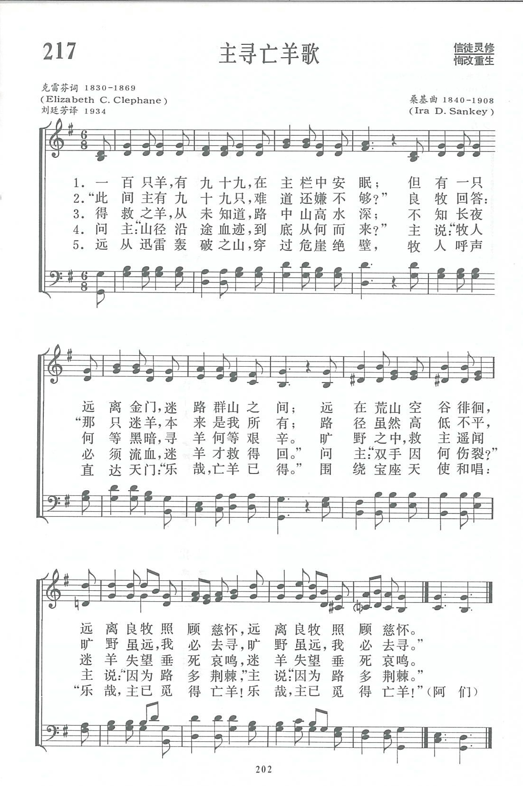

|
|
|
|
1 There were ninety and nine that safely lay
2 “Lord, Thou hast here Thy ninety and nine;
3 But none of the ransomed ever knew
4 “Lord, whence are those blood-drops all the way,
5 And all thro' the mountains, thunder-riv’n,
|
1、一百只羊，有九十九，在主栏中安眠； 但有一只远离金门，迷路群山之间； 远在荒山空谷徘徊，远离良牧照顾慈怀， 远离良牧照顾慈怀。 2、“此间主有九十九只，难道还嫌不够？” 良牧回答：“那只迷羊，本来是我所有； 路径虽然高低不平，旷野虽远，我必去寻， 旷野虽远，我必去寻。” 3、得救之羊，从未知道，路中山高水深； 不知长夜何等黑暗，寻羊何等艰辛。 旷野之中，救主遥闻迷羊失望垂死哀鸣， 迷羊失望垂死哀鸣。 4、问主：“山径沿途血迹，到底从何而来？” 主说：”牧人必须流血，迷羊才救得回。” 问主：“双手因何伤裂？”主说：“因为路多荆棘，” 主说：“因为路多荆棘。” 5、远从迅雷轰破之山，穿过危崖绝壁， 牧人呼声直达天门：“乐哉，亡羊已得。” 围绕宝座天使和唱：“乐哉，主已觅得亡羊！ 乐哉，主已觅得亡羊！”（阿们） |
|
https://www.zanmeishige.com/tab/13890.html?songbook=1&index=217

|
|
|
|
|


讚美詩歌310首_29主尋亡羊 https://youtu.be/zNg-FCgxfQM - Ninety and Nine Acapeldridge
https://youtu.be/VqRjmVp4cR8 - Donnie Sumner, The Talley Trio - The Ninety and Nine [Live]
https://youtu.be/pXg0p0imY_A
| Text: | The Ninety and Nine |
| Author: | Elizabeth C. Clephane |
| Tune: | [There were ninety and nine that safely lay] |
| Composer: | Ira D. Sankey |
| Short Name: | Elizabeth Cecilia Clephane |
| Full Name: | Clephane, Elizabeth Cecilia, 1830-1869 |
| Birth Year: | 1830 |
| Death Year: | 1869 |
Clephane, Elizabeth Cecilia,
third daughter of Andrew Clephane, Sheriff of Fife, was born at Edinburgh, June 18, 1830, and died at Bridgend House, near Melrose, Feb. 19, 1869. Her hymns appeared, almost all for the first time, in the Family Treasury, under the general title of Breathings on the Border. In publishing the first of these in the Treasury, the late Rev. W. Arnot, of Edinburgh, then editor, thus introduced them:—
"These lines express the experiences, the hopes, and the longings of a young Christian lately released. Written on the very edge of this life, with the better land fully, in the view of faith, they seem to us footsteps printed on the sands of Time, where these sands touch the ocean of Eternity. These footprints of one whom the Good Shepherd led through the wilderness into rest, may, with God's blessing, contribute to comfort and direct succeeding pilgrims."
Notes
There were ninety and nine that safely lay. Elizabeth C. Clephane. [The Lost Sheep.] This beautiful poem was probably written in 1868 at Melrose, where the authoress then resided, and first published in 1868, in a small magazine for the young, entitled, The Children's Hour, pt. ii. p. 15, in 5 stanzas of 6 lines. Subsequently it appeared as No. 8 of the series of her hymns entitled Breathings on the Border, in the Family Treasury, 1874, p. 595. Thence it was copied into the Christian Age, May 13, 1874, where it was seen by Mr. I. D. Sankey, who set it to music and sang it with great effect at his gospel meetings. He included it in 1875 in his Sacred Songs and Solos. It has since appeared in England, in the Hymnal Companion, 1876; Thring's Collection 1882; Baptist Psalms & Hymns Supplement, 1880, &c., and in America in the Evangelical Association Hymn Book, Cleveland, 1882, and other collections. It is rapidly attaining a foremost position among modern hymns. [Rev. James Mearns, M.A.]
--John Julian, Dictionary of Hymnology (1907)
Tune Information
| Title: | [There were ninety and nine that safely lay] (Sankey) |
| Composer: | Ira David Sankey (1874) |
| Meter: | Irregular |
| Incipit: | 55111 11771 1133 |
| Key: | A♭ Major |
| Copyright: | Public Domain |
| Short Name: | Ira David Sankey |
| Full Name: | Sankey, Ira David, 1840-1908 |
| Birth Year: | 1840 |
| Death Year: | 1908 |
Sankey, Ira David,

was born in Edinburgh, Pennsylvania, in 1840, of Methodist parents. About 1856 he removed with his parents to Newcastle, Pennsylvania, where he became a member of the Methodist Episcopal Church. Four years afterwards he became the Superintendent of a large Sunday School in which he commenced his career of singing sacred songs and solos. Mr. Moody met with him and heard him sing at the International Convention of the Young Men's Christian Association, at Indianapolis, and through Mr. Moody's persuasion he joined him in his work at Chicago. After some two or three years' work in Chicago, they sailed for England on June 7, 1872, and held their first meeting at York a short time afterwards, only eight persons being present. Their subsequent work in Great Britain and America is well known.
Mr. Sankey's special duty was the singing of sacred songs and solos at religious gatherings, a practice which was in use in America for some time before he adopted it. His volume of Sacred Songs and Solos is a compilation from various sources, mainly American and mostly in use before. Although known as Sankey and Moody’s Songs, only one song, "Home at last, thy labour done" is by Mr. Sankey, and not one is by Mr. Moody. Mr. Sankey supplied several of the melodies. The English edition of the Sacred Songs & Solos has had an enormous sale; and the work as a whole is very popular for Home Mission services. The Songs have been translated into several languages.
第217首 主寻亡羊歌 THE NINETY AND NINE _桑基
经文：“你们中间，谁有一百只羊失去一只，不把九十九只撇在旷野，去找那只失去的羊，直到找着呢?”(路15：4：)
主寻亡羊的比喻曾激发许多画家付诸丹青。也感动不少作家写成诗文。这首诗本来没有很大名气，但经桑基(事略参阅第54首)配以名曲《九十九》，现在已成为基督教范围内最受欢迎的名歌之一。
1874年，桑基和慕迪正在美国各地领布道奋兴会。有一次，他们从苏格兰的格拉斯哥乘火车上爱丁堡去。上车前桑基买了一份周报，原想找点有关美国的新闻，结果大失所望，乃将那份周报放在一边。快到站时，他又将它拿起来，无意中发现有一首叙述主寻亡羊的诗歌，乃把它剪下来，夹在乐谱本子里。第二天正午，慕迪以“好牧人”为题讲道之后，问桑基有没有合适的诗歌独唱一下，以结束礼拜。桑基自称这是他生命中最紧张的一刹那，因为他原想唱诗篇第23篇，但已经唱过好几次，恐怕一唱便有许多听众跟着唱起来。正在这个时刻，似乎有个声音对他说：“就唱你在火车上所剪下的那首诗吧!”当时那诗还没有配调。他将那张小纸放在琴前，举心仰望，求神给他一个曲调。当他手指按在琴键上时,他也就放声唱起来了。从此，这首诗不胫而走，并且一直没有改动过。这首《一百只羊有九十九》的曲谱(简称《有九十九》)便是在这样情况下产生的。据称它是桑基惟一的一首临时即兴创作出来的歌谱。
桑基在爱丁堡首次唱了这首《主寻亡羊歌》后，又在其他地方再唱。一天他在梅尔罗斯地方唱完后，有姐妹二人找到他说，这首诗是她们的大姐以利沙伯.克雷芬(事略参阅第99首)所写，并且述说该诗产生的经过。原来，她们的哥哥乔治远离家园，漂流加在拿大。他喜欢喝酒，有一晚在大醉后，跌倒在马路旁，竟至送命。噩耗传来，姐妹三人都非常悲痛，大姐尤甚。她独自回到房里，关上门痛哭不已，待到稍微冷静下来后，便拿起笔来在一张纸上准备写点感想。当她想到了神以爱寻找亡羊，必会垂怜拯救她哥哥时，不知不觉地她手中的笔忽然蠕动起来，在纸上写出了灵魂深处的感受一主寻亡羊。这原是一时寄托情感的小品，写好之后，把它另外放在一处。直到她去世之后，亲友们为她整理遗物时才发现的，并将它寄投教会杂志发表。
桑基在他的《自传与福音圣诗故事》一书内曾引证若干事例说明这首诗和曲的伟大感力(自从那时起真不知它曾感动了多少的迷路羔羊回到主的羊圈)。现摘要介绍两个事例：
英国有位与桑基、慕迪同工的喀拉馨太太，由于健康关系要去欧洲大陆易地休养，临行时买了一批简装的《圣诗和独唱》，以备在路上和欧洲分发。一到巴黎大宾馆，她就将几本放在阅览室。当晚，有一位也是从英伦来的青年，到阅览室找报纸看，无意中发现这本诗歌，一看是桑基编的，他觉得很熟悉，因他有个姐姐也是一位热心信徒，并且参加了慕迪布道团。她时常教他唱诗，并劝他去听道，但都感动不了他。
为了好奇，他翻开该书一看，立时见到：
但有一只远离金门，迷路群山之间，
“要是姐姐看见这两句，一定会说那指的就是我了。”他自言自语说出他心里的憎恶，把书撇到一边，就独自看戏去了。但在戏院里他的心里毫无平安，似乎听见有人在他耳旁喊着说：“但有一只远离金门，迷路群山之间”。他怅然离开戏院，急忙回旅馆蒙上被睡觉，以为可以把这件事忘掉。谁知第二天刚醒，那句话又回到他的脑子，使他坐卧不安，以致最后没法，还是再回到阅览室看看那句话前后倒底怎么说的。由于不知诗的首句，他翻来复去好容易才找到，一看前两句是：“一百只羊，有九十九，在主栏中安眠。”
“啊!那无疑是我的姐姐，她安眠在羊圈里，而我呢?岂不就是‘迷路群山’的一只吗?”
他终于幡然改途，不再作迷途的羊。当她姐姐来看他时，他欣然拿出这首诗来，告诉姐姐，是这首诗引他回到羊圈，“乐哉主已觅得亡羊。”
第二个例子，当1875年慕迪与桑基从英伦回到美国，第一个主日便在慕迪故乡麻州北田村公理会(见第25首注①)老堂聚会。前来听道的真是人山人海，连门前空地都站满了人，慕迪便宣布就在院子里讲道。门口仅有一个小地方安置一架风琴，供桑基领唱诗。会众唱几首诗后慕迪宣告，让我们同唱《九十九》吧!就在礼拜堂对门，隔着小河，有个老年人坐在走廊的藤椅上，他拒不来听道，看见全家的人都去听道，他很生气。但一听唱这首《九十九》时，他心里十分难过，几天之后请人们为他祷告，结果他得到了重生，参加了慕迪的工作。
几年以后，当北田公理会教堂举行新堂奠基礼时，慕迪请桑基站在房角石上再唱一遍《九十九》这首诗。他的意思是说教堂的兴建就是要引领亡羊归回。这一次。那位老弟兄已经卧床不起，但听说要唱这首诗，连忙叫他老伴将南窗打开，让他再一次听见这首引他回圈的名歌。听着，听着，他就安然回到大牧人的圈中去了。
Words: Elizabeth Cecilia Douglas Clephane (b. June 18,
1830; d. Feb. 19, 1869)
Music: Ira David Sankey (b. Aug. 28, 1840; d. Aug. 13,
1908)
Links:
Wordwise Hymns (Elizabeth
Clephane, and her brother George)
The Cyber
Hymnal
Note: George Clephane was the lost sheep of this wonderful song. His story is told in the Wordwise Hymns link. The creation of the words and the tune are both amazing from beginning to end. So are the many accounts of individuals who’ve been blessed by the song. In his book, My Life and the Story of the Gospel Hymns, Ira Sankey devotes nine pages to one story after another of how the Lord used The Ninety and Nine to change lives.
One day, Mr. Sankey received a letter from Elizabeth’s sister, thanking him for turning her late sister’s poem into a song. (She’d died several years before.) The letter told Sankey more about this Christian family in Melrose, Scotland, and about Elizabeth, of whom her sister said:
“She was a very quiet little child, shrinking from notice and always absorbed in books. The loss of both parents at an early age taught her sorrow. As she grew up, she was recognized as the cleverest of the family. She was first in her class and a favourite of the teacher. Her love of poetry was a passion. Among the sick and suffering she won the name of ‘My Sunbeam.’”
Elizabeth Clephane wrote the song text when she was twenty-one, and it’s based on Jesus’ parable of the lost sheep (Lk. 15:3-7). In the parable, the shepherd represents the Lord Himself, caring for His sheep. In the historical context, these are the people of Israel who had lost their way spiritually (Matt. 10:6; 15:24; cf. Ps. 78:52; 80:1). However, we can see in it an application to any backslidden child of God. (Notice, it’s one of the shepherd’s own sheep that had wandered off.) More broadly, the parable also suggests His concern for lost sinners whom He came to save (Lk. 19:10; cf. Isa. 53:6).
CH-1) There were ninety and nine that safely lay
In the shelter of the fold.
But one was out on the hills away,
Far off from the gates of gold.
Away on the mountains wild and bare.
Away from the tender Shepherd’s care.
Away from the tender Shepherd’s care.
1) See in the Bible, and the song, the care of the shepherd. “He calls his own sheep by name and leads them out [to pasture]….He goes before them, and the sheep follow him, for they know his voice.” Christ adds, in explanation, “I am the good shepherd, and I know My sheep, and am known by My own” (Jn. 10:3-4, 14). The Lord is concerned for His flock.
2) See also the concentration of the shepherd. Though he knows and cares for all his sheep, he is concerned for the welfare of each one individually. Even though most are safe in the fold, he notices that one has wandered off. Compare the work of salvation. The big picture is: “God so loved the world” (Jn. 3:16), and Jesus died for the sins of all mankind (I Jn. 2:2). But that sufficient payment does not become efficient until it is personally appropriated by faith. Then, we as individuals can say, “The Son of God…loved me and gave Himself for me” (Gal. 2:20).
3) Then see the courage of the shepherd. He heads off into the wilderness to search for that one lost sheep. Similarly, God the Son took on our humanity and descended to the wilderness of this world, giving His life to save us. Even though His sacrifice is proclaimed in the Word of God, we can have little conception of what it cost Him. As Elizabeth Clephane puts it in CH-3 and 4:
None of the ransomed ever knew
How deep were the waters crossed;
Nor how dark was the night the Lord passed through
Ere He found His sheep that was lost.“Lord, whence are those blood drops all the way
That mark out the mountain’s track”
“They were shed for one who had gone astray
Ere the Shepherd could bring him back.”
4) Finally, see the celebration of the shepherd. “Rejoice with me,” he says, “for I have found my sheep which was lost!” (Lk. 15:6). In the spiritual application, that there is “joy in heaven” over one sinner who repents (vs. 7).
CH-5) And all through the mountains, thunder riven
And up from the rocky steep,
There arose a glad cry to the gate of heaven,
“Rejoice! I have found My sheep!”
And the angels echoed around the throne,
“Rejoice, for the Lord brings back His own!
Rejoice, for the Lord brings back His own!”
Questions:
1) Heaven is surely a place filled with joyful praise. What must it be
like when there is a special celebration over the salvation of one
individual?
2) Based on what we know of the Shepherd, what implications does this have for us as His servants?
Links:
Wordwise Hymns (Elizabeth
Clephane, and her brother George)
The Cyber
Hymnal
https://wordwisehymns.com/2012/03/28/the-ninety-and-nine/